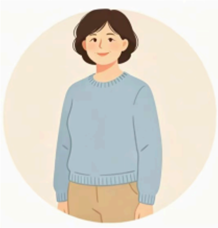

PuPath
A contextual and playful campus tour tool rather than a generic map-only app.
PuPath is a mobile-first campus tour PWA for XJTLU SIP Campus. It supports freshmen, current students, visitors, and staff through identity-aware recommendations, interactive map browsing, themed routes, check-ins, badges, weather-aware suggestions, and Chinese/English switching.
This portfolio focuses on process rather than promotion. It records the design problem, research input, personas, user journey, key requirements, and the path from early concept to a working public demo.
A contextual and playful campus tour tool rather than a generic map-only app.
Chosen for portable mobile use, fast access from a QR code, and low friction during campus visits.
Freshmen, current students, visitors, and staff with different campus priorities and route needs.

ID: 2363296

ID: 2362913

ID: 2363969

ID: 2362498
We worked as a four-person CPT208 team across research, interaction design, content planning, implementation, testing, and presentation. The portfolio and the app were developed in parallel so that each design decision could be traced back to a concrete product choice.
Our motivation came from a simple but recurring campus problem: new students and visitors often know the name of a place, but they still do not know where to start, which route is worth following, or which locations matter most in their situation. A campus can feel academically rich yet spatially unfriendly when information is scattered across maps, signs, websites, and informal advice.
PuPath was motivated by the idea that campus orientation should feel guided rather than stressful. Instead of building another map-only tool, we wanted to design an experience that helps users understand the campus through identity-aware entry, route suggestions, bilingual support, and lightweight playful feedback.
The final concept combined a mobile-first PWA, personalized home entry, interactive map browsing, themed routes, check-ins, badges, bilingual switching, and an online campus preview. We deliberately removed heavy social and community functions because they were less aligned with the main goal of campus orientation. This direction stayed feasible while still feeling clearly different from a generic navigation app.
Our requirement collection combined questionnaire input, face-to-face communication, and online discussion to understand what users actually need from a campus tour tool. The aim was to identify the real orientation problem before deciding on features.

Li Hua is an 18-year-old freshman at XJTLU. She is excited to start university life, but the campus feels large and unfamiliar. She relies heavily on her phone, so a mobile-first tool that explains where to go first and why each place matters is more useful to her than a static map.

Wang Lihua is the mother of a freshman and is visiting XJTLU for the first time during registration. She is not looking for a complex navigation tool. What she needs is a simple, bilingual, low-friction route that helps her understand the campus without needing prior knowledge or app installation.
Primary scenario: Li Hua has just entered campus and wants to find important places without feeling overwhelmed. PuPath turns first-day navigation into a guided exploration flow rather than leaving the user with a blank map.
Choose Freshman, Student, Visitor, or Staff to personalize entry content.
See weather, recommended routes, featured places, and quick access options.
Browse POIs, filters, and details to understand what is nearby and why it matters.
Follow a themed route that gives structure instead of forcing self-planning.
Use manual or mock QR check-ins and get badge feedback during exploration.
Return to My Page to see saved places, route history, and unlocked badges.
The requirement structure below moves from target users to core product requirements, and then to the playful requirements that make PuPath distinct from a conventional campus map.
We categorised users into four groups: freshmen, current students, visitors, and staff, each with different campus priorities.
The app must open quickly on phones and remain usable in a real campus movement scenario.
Freshmen, students, visitors, and staff should see different priorities when entering the app.
Chinese and English switching is required for an international campus context.
New students and visitors should be able to understand the campus in advance through the Explore Online module.
Users should be able to follow interest-based routes instead of relying only on point lookup.
Check-ins should provide immediate feedback and reward users with virtual collectibles linked to XJTLU elements.
Badge unlocking should reward exploration progress and encourage repeated campus interaction.
The prototype section focuses on what we designed and validated. PuPath is structured as a mobile-first PWA with five main interfaces, and this section explains how that interface model and the related interactions were developed.
PuPath consists of Home, Map, Tours, Discover, and My. Together they cover entry, spatial exploration, guided routes, campus topics, and personal records.
We needed to verify that a mobile-first PWA could support first-day campus orientation better than a static map by combining identity-aware entry, guided routes, and lightweight playful interaction.
Early sketches defined the page hierarchy around Home, Map, Tours, Discover, and My, and tested whether users preferred a guided entry rather than jumping straight into a map.
The high-fidelity prototype focused on identity switching, bilingual UI, route details, check-ins, treasures, badges, weather suggestions, POI browsing, and local record management.
The development log records how the project moved forward across different stages, from problem framing to implementation and validation. It also reflects both the internal and public evaluation stages of the project.
We selected the campus tour topic, clarified the first-day orientation problem, and set boundaries for a realistic course-scale project.
We collected lightweight interview and survey input, identified key issues, and shaped the first version of personas and user journey.
After requirement collection and platform confirmation, we wrote the PRDs. We divided the documentation into three parts: a functional document, a UI design document, and a development document to support later design and implementation.
We tested page structure, navigation hierarchy, and whether the product should start from a map, a route, or a personalized home page.
We refined the visual language and finalized the main interactions for map browsing, route flow, check-ins, badges, bilingual switching, and local records.
The prototype was implemented using React, TypeScript, Zustand, i18next, MapLibre, local mock data, and GitHub Pages deployment.
After major functional updates, we ran internal checks to find problems such as incomplete English text, route clarity issues, font encoding problems, and incorrect initial map location.
We collected feedback from five representative users. Main issues included unclear badge acquisition rules, confusion between themed routes and direct navigation, and the need for real campus validation of POIs and routes.
The biggest lesson from this project was that campus navigation problems are rarely solved by adding more visual effects. Our early ideas included heavier immersive features, but research and scope control made it clear that portable mobile use, clear route structure, and identity-aware content were more valuable.
We also learned that design decisions become stronger when they are tied to concrete requirements and testable flows. Moving from sketches to a working PWA forced us to turn vague ideas into specific user actions such as switching identity, opening a POI, starting a route, checking in, and reviewing saved records. Future improvements will focus on campus data validation, POI accuracy, richer online preview content, and more polished onboarding.